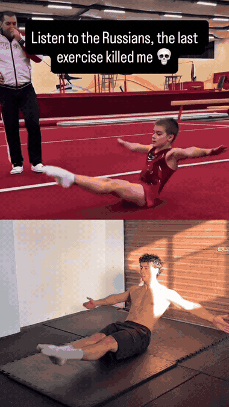
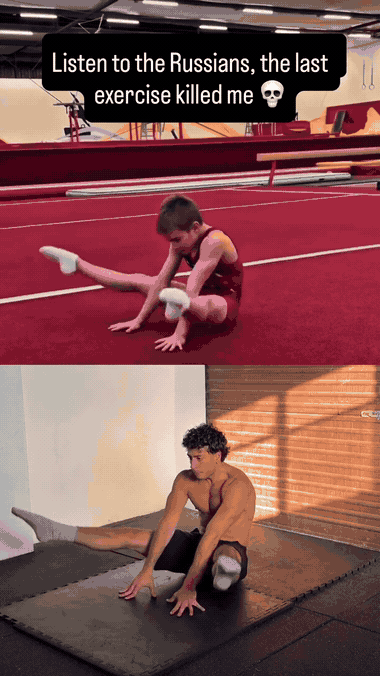
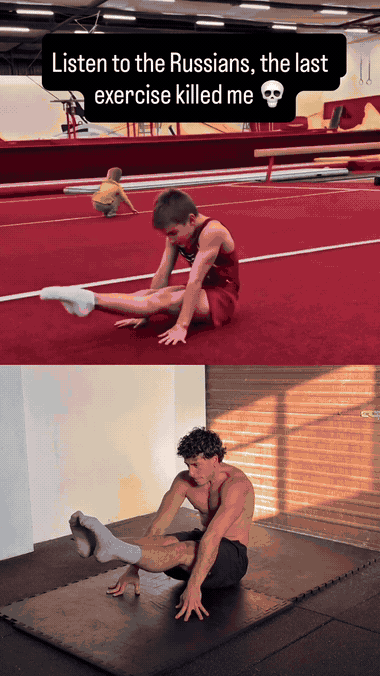

Seated straddle where you actively compress the legs toward the floor while keeping the torso tall — building the hamstring-brace and hip-hinge control needed for deep pancake work.

From the straddle, fold forward with a straight back and slide the hands along the floor — the classic pancake fold that opens hamstring range and trains a flat back hinge.

Side-to-side cossack transition — one leg folds under while the other stays long — linking the floor shapes into fluid, controlled movement.